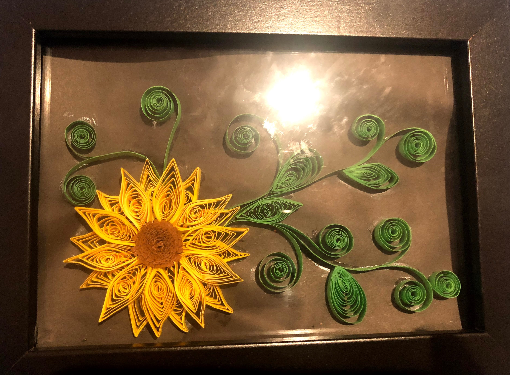
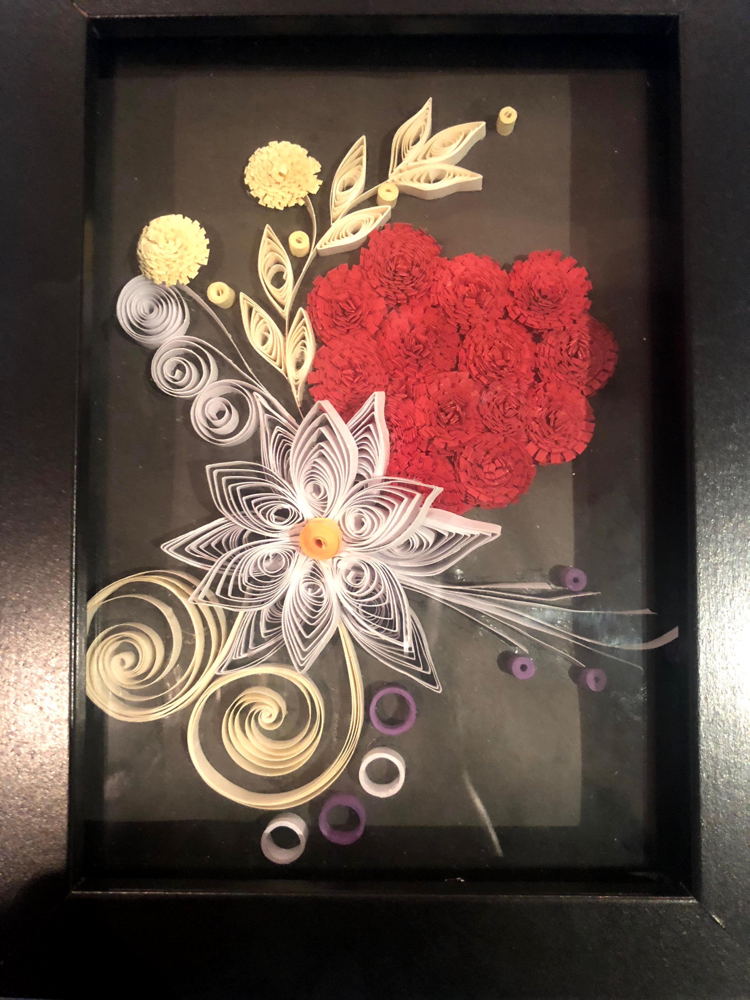
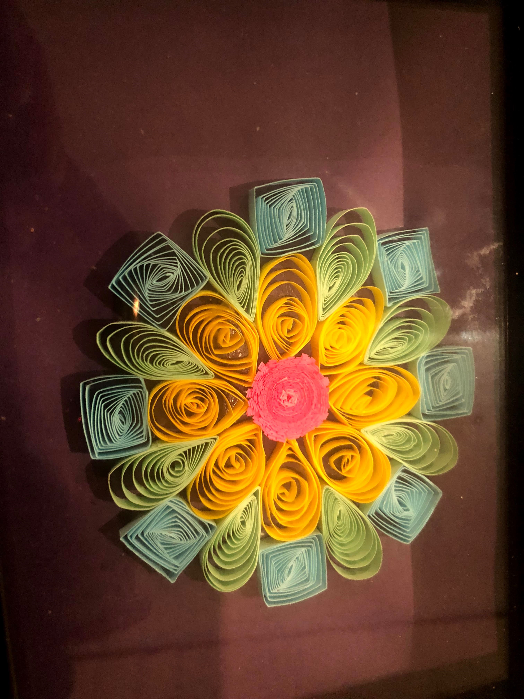
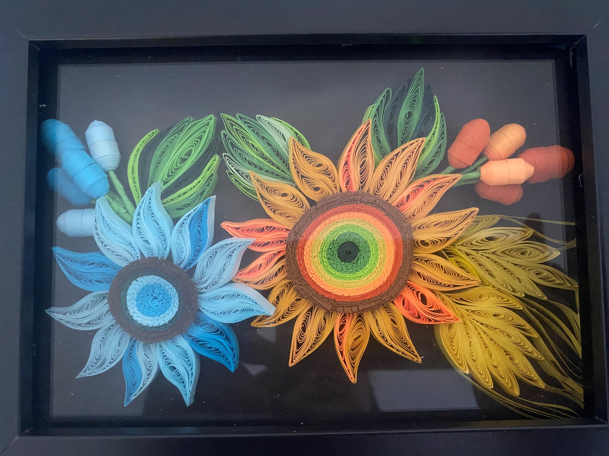
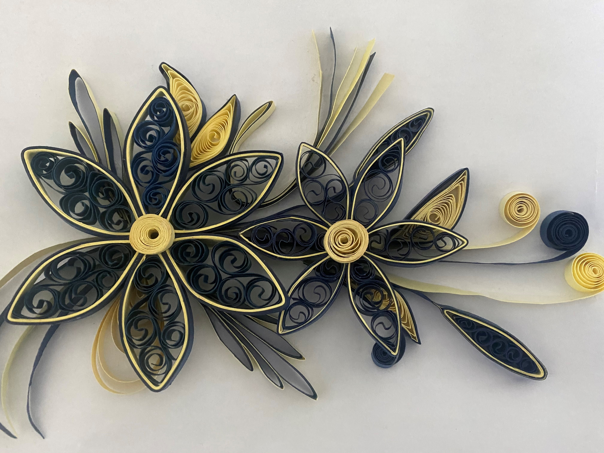
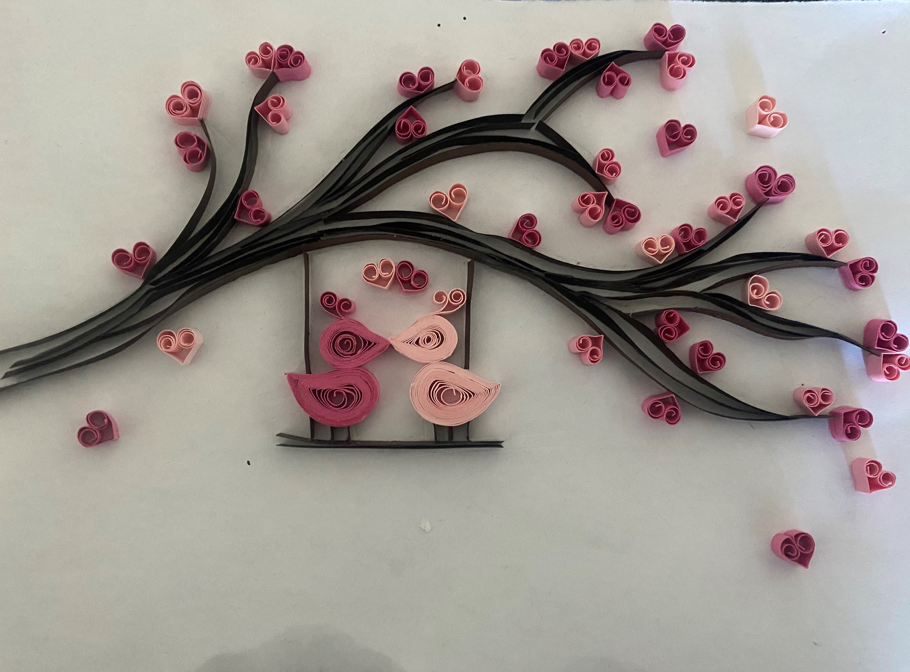

Personal Information
My name is Sabina Maharjan. I live in NSW and has been residing in Australia for last 13 years. My home country is Nepal. I am Hindu and the language I speak at home is Nepalese. Besides this, I can also speak Hindi and English. I am studying Bachelor of Security Studies at Macquarie University. I am very spontaneous and creative person. In my leisure time, I like to do handcrafts and I have self-taught paper quilling by watching YouTube videos. I have uploaded some pictures of my work below.
     Interest In IT
Talking about IT, I do not have any IT background though, I am an active technology user. My interest started ever since Apple.Inc launched iPhone, to be honest. I like their application and convenience that has provided in my busy life and I always wondered how these application were created and get connects with other device through one iCloud system. I like to analyze and resolve hardware issues. I do not see myself as a computer programmer but I like to explore new things. This is the one of the many reason to choose this unit and RMIT for the best study to a students like me. RMIT renowned university for Informtion Technology and Design. It is available for online study and equips student with wide range of education tools and support to be successful. From this unit,I expect to get basic knowledge of Information Technology and insights to grow my interest and knowledge. This will enhance my degree and of course my future career.
Ideal Job
The job application that I found in seek.com is about Financial Crimes/ AML Solution Consultant & Implementer Click for Job Description. It’s about analyzing and investigation of fraud and crime which sounds interesting. It requires banking background and knowledge in the areas of Financial Crimes and AML Compliance. Should be keen on questioning mind and analyzing data for hidden information. Experience with regulatory practices within financial services industry including AML, AUSTRAC and FATCA. Additional skills of some programming knowledge like Java and database analytical skills using SQL. I have a banking background and acquire some knowledge around AML and FATCA. However, I am not specialized in data analysis and programming knowledge. So, I would like to gain basic programming knowledge and analytical skills of SQL.
My Personality Test
Type: “THE ADVOCATE” (INFJ-A)

Traits Introverted - 65%
Intuitive - 60%
Feeling - 63%
Judging - 64%
Assertive - 51%
Role Diplomat
Strategy Confident Individualism
Please click the link below to know myself better through few test that I took
Visit My Personality Result Web
Visit My Kinesthetic Learning Style Test Web
Visit My Choice of Online Test Web
The personality test helped me know myself more in depth and grow within. Understanding my own strength and weakness will definitely help me to polish myself. Some of the 'Advocate' traits are resourceful, creative and motivated. These trait will help myself and my team collaborate seamlessly and achieve our goal to succeed. This test is just to get an idea of which areas appeal to yourself, capabilities and understanding of why we prefer certain things than others. So I think, we should not be overwhelmed or carried away with those qualities as we know what we are capable of and be optimistic.
Idea
Technology plays vital role to humans’ day to day living. There is no person in earth that does not use technology. One of the major impact of technology is the way we communicate with our friends and family worldwide through electronic means. Internet has helped learning more interactive, fun, share new ideas and advance knowledge. Technology has improved and destruct human lives. People are so dependent on technology that we have stop using brain. For simple mathematics, we need calculator. People are less interactive face to face and prefer email and chat to share their feelings and emotions.
Motivation
We live in digital world and things are getting done in one click of the button online. Due to this, cybercrimes, fraud and scams are increasing rapidly and now many people are very suspicious about using technologies. As I work in banking and financial service, I have experienced lots of customer getting scammed and victim of identity theft. One of the major issues is unauthorized transaction and digital fraud and I always find this very interesting that how criminals are accessing files and manipulating fraud detection system.
Description
The IT project that I would like to work on relates to above mentioned issue. In our day-to-day life, we are extremely dependent on technologies and without this we hardly can sail smoothly. When we purchase items online or in store now, due to advance technologies we do not have to carry card which save us carrying thick wallet with cash and plastic card. However, there is a high risk of data breach and exposure of personal information. This may lead to hacking of bank account, phishing, identification theft and scam which we are arising rapidly. Every transaction in store and online requires bank card, chip or secret pin number. Though chip on card has more security and most of the transaction requires pin and CVV for validation, I believe there is a need of new technologies for secure payment. It is high time to introduce a unique authentication like every individual’s unique fingerprint for extra security and verification rather than using pin code or password. Now a days, we can find most of the electronic products such as smartphones, laptop, tablets, and computers also has a fingerprint scanner authentication. The magnetic strip found at the back of our ATM plastic card has customer information and it is more vulnerable than chip attached to the card. I think getting rid of the magnetic strip on plastic and card number may help resolve the matter to some extent and there will no financial loss and insecurity.
Tools and Skills Required
The tools require for this project is the biometric fingerprint scanning device attached to ATM and EFTPos terminal and software like MorphoManager to analyze and record every individual fingerprint which addresses the inherent factor (those associated with the biological identity of a user). Biometric sensor will be able to capture fingerprint easily and software application will then transfer record to corresponding reader. The portable scanner can be plug into the PC’s USB drive and pair with software for secure method of transaction.
Outcome
Biometrics provides more security that cannot be misplaces and stolen. Because of the pattern of ridges are unique to every individual, it gives high security, convenience and quick ID setup on those devices. Many people struggle with memorizing their pin code and password, so it is less hassle and avoid signature forgery. This innovation will help in minimizing financial loss to business and customer insecurity and wary to use technologies.